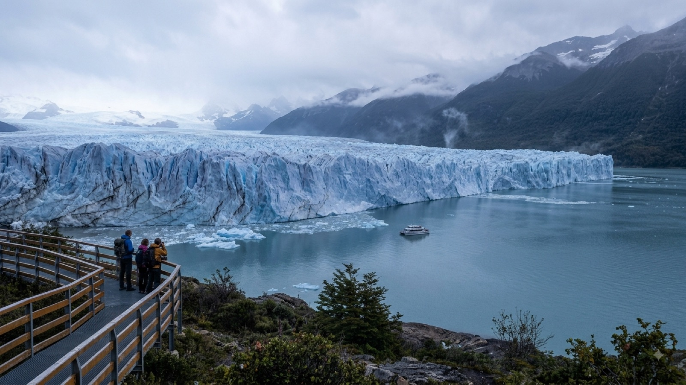

טיול בארגנטינה 2026 — המדריך המלא

ארגנטינה היא מדינה של קצוות, וההבדל ביניהם מטלטל. בבוקר אחד אתם עומדים מול חזית קרח בגובה שישים מטר שמתפוצצת לתוך אגם, ושבוע לאחר מכן מזיעים מול חומת מים טרופית באורך שלושה קילומטרים. בין שני הקצוות האלה יש עיר שמרגישה כמו מדריד שהחליטה לישון עד הצהריים, יקבים למרגלות הפסגה הגבוהה באמריקה, ורמות מדבר צבעוניות שנראות כאילו מישהו שפך עליהן קופסת צבעים.
בשביל רוב המטיילים הישראלים ארגנטינה היא נקודת הפתיחה או נקודת הסיום של הטיול הגדול — כאן נוחתים בנובמבר ומתחילים לזחול צפונה עם הגל העולה, או כאן מסיימים אחרי חודשים באנדים. בשני המקרים היא מדינה שאי אפשר לעשות בחצי כוח: המרחקים בה עצומים, העונות נוקשות, והתכנון קובע אם תראו את פטגוניה במיטבה או תגיעו לשער סגור. המדריך הזה מרכז את מה שבאמת צריך לדעת לפני שיוצאים.
מתי כדאי לנסוע לארגנטינה?
אין תשובה אחת, ומי שמחפש אותה יגיע בזמן הלא נכון לחצי מהמדינה. ארגנטינה משתרעת על יותר מ-3,500 קילומטר מצפון לדרום, ולכל אזור לוח זמנים משלו.
פטגוניה (אל צ׳אלטן, אל קלפטה, אושואיה, ברילוצ׳ה) — נובמבר עד מרץ. זו הנקודה הקריטית ביותר בתכנון טיול בארגנטינה. הקיץ בחצי הכדור הדרומי הוא החלון שבו השבילים פתוחים, המקלטים והקמפינגים פועלים, האוטובוסים נוסעים בתדירות מלאה, ואור היום נמשך עד עשר בערב ואפילו מאוחר יותר. דצמבר עד פברואר הם השיא: הכי יפה, הכי עמוס, הכי יקר, ובאל צ׳אלטן ובאושואיה צריך להזמין לינה שבועות מראש. נובמבר ומרץ הם פשרה מצוינת — פחות אנשים, מחירים נוחים יותר, מזג אוויר עדיין סביר. מאפריל עד אוקטובר חלק גדול מהתשתית בפטגוניה פשוט נסגר: מסלולים חסומים בשלג, קווי אוטובוס מצטמצמים לכמה יציאות בשבוע, ובאושואיה יורדים לשעות אור בודדות ביום. אפשר להגיע — אבל זה טיול אחר לגמרי, ורובו מתמקד באתרי סקי.
הצפון (סלטה, חוחוי) — כל השנה, אבל עדיף אפריל עד נובמבר. החורף הדרומי הוא דווקא העונה היבשה של הרמות הצפוניות: שמיים בהירים, ימים נעימים ולילות קרים מאוד בגובה. דצמבר עד מרץ הוא שיא עונת הגשמים שם, ובה כבישי עפר נחסמים ולא תמיד רואים את מה שבאתם בשבילו. שימו לב לגובה — פורמאמרקה יושבת על כ-2,300 מטר וסלינאס גראנדס מעל 3,400.
מפלי האיגואסו — כל השנה, עם אופי משתנה. החורף (יוני–אוגוסט) נעים יותר להליכה ופחות מזיע, אך ספיקת המים לרוב נמוכה יותר. הקיץ חם ולח ברמות של ג׳ונגל אמיתי, אבל המפלים בשיא כוחם. אביב וסתיו הם הפשרה הנוחה.
בואנוס איירס ומנדוסה נוחות רוב השנה. הקיץ בבואנוס איירס חם ולח ורבים מהמקומיים בורחים ממנה, ואילו מרץ ואפריל במנדוסה הם עונת הבציר — הזמן היפה ביותר בין הכרמים.
ויזה, כניסה ומעברי גבול
בעלי דרכון ישראלי לא צריכים ויזה מראש לארגנטינה ומקבלים בדרך כלל 90 יום בכניסה. הדרכון צריך להיות בתוקף למשך כל השהות, ורצוי שישה חודשים קדימה. בשדה התעופה של בואנוס איירס לרוב אין שאלות מיוחדות, אבל שווה שתהיה בהישג יד כתובת של הלינה הראשונה וכרטיס טיסה יוצא.
מה שמייחד את ארגנטינה הוא לא הכניסה הראשונה אלא כמות הפעמים שתחצו גבול אחריה. במסלול פטגוני טיפוסי עוברים בין ארגנטינה לצ׳ילה שלוש או ארבע פעמים, פשוט כי הכביש היחיד ההגיוני עובר בצד השני. זה תקין לחלוטין וכל כניסה מקבלת חותמת חדשה, אבל כדאי לקחת בחשבון את הזמן: מעבר גבול פטגוני ממוצע גוזל בין שעה לשלוש, כי כל הנוסעים יורדים משני צידי הגבול.
המעברים המרכזיים:
- לצ׳ילה בפטגוניה: אל קלפטה ↔ פוארטו נטאלס (הדרך לטורס דל פאינה) — המעבר הנפוץ ביותר; ברילוצ׳ה ↔ אזור האגמים הצ׳יליאני, כולל החצייה היפהפייה בשילוב אוטובוסים וסירות; אושואיה ↔ פונטה ארנס, שחוצה את מצר מגלן במעבורת.
- לצ׳ילה בצפון: מנדוסה ↔ סנטיאגו דרך מעבר לוס ליברטדורס — נסיעה מרהיבה בין פסגות האנדים, שנסגרת מדי פעם בחורף בגלל שלג.
- לבוליביה: לה קיאקה ↔ ויאסון, צפונית לחוחוי. מעבר יבשתי פשוט שעוברים ברגל, ומשם ממשיכים לטופיסה ולאוּיוּני. הגיעו מוקדם בבוקר — התורים מתארכים משמעותית אחר הצהריים.
- לברזיל: פוארטו איגואסו ↔ פוז דו איגואסו. שני צידי המפלים במרחק נסיעה קצרה זה מזה, והמעבר שגרתי.
- לאורוגוואי: מעבורת מנמל בואנוס איירס לקולוניה דל סקרמנטו (כשעה) או ישירות למונטבידאו. אחד ממעברי הגבול הנעימים ביבשת — בודקים דרכונים בטרמינל לפני ההפלגה.
נקודה שתופסת מטיילים לא מעטים: צ׳ילה אוסרת בהחלט על הכנסת מזון טרי — פירות, ירקות, בשר, מוצרי חלב ואפילו דבש. בכניסה עוברים סריקת תיקים ממש, והקנס על תפוח ששכחתם בתיק הוא אמיתי. סיימו את האוכל לפני הגבול.
כמה עולה טיול בארגנטינה?
ארגנטינה יושבת באמצע הטבלה של דרום אמריקה: יקרה יותר מבוליביה ומפרו, זולה יותר מצ׳ילה, מאורוגוואי ומברזיל. אבל יש כאן הסתייגות חשובה יותר מהמספרים עצמם.
ארגנטינה חוותה שנים ארוכות של אינפלציה גבוהה, לצד היסטוריה של שערי חליפין מקבילים ומנגנוני המרה משתנים. המשמעות המעשית כפולה: ראשית, כל מחיר במדריך — כולל זה — מתיישן מהר, וטבלה שנכתבה לפני שנה עשויה להיות רחוקה מהמציאות. שנית, שיטת ההמרה שבה תשתמשו יכולה לשנות באופן ממשי את עלות הטיול: משיכה מכספומט, תשלום בכרטיס והמרת מזומן לא בהכרח מתומחרים אותו הדבר, והפערים בין השיטות היו בעבר עצומים. הכללים והשערים משתנים לעיתים קרובות, ולכן אין טעם לצטט כאן מנגנון או שער כאילו הם קבועים. מה שכן שווה לעשות: לבדוק את המצב העדכני יומיים לפני הטיסה, ולשאול בהוסטל הראשון בבואנוס איירס מה עובד עכשיו. מטיילים שנמצאים בשטח יודעים את זה טוב יותר מכל מאמר.
המספרים שלמטה נקובים בדולרים בכוונה — הם יציבים הרבה יותר לאורך זמן ממחירים בפזו.
| הוצאה | מחיר משוער |
|---|---|
| מיטה בחדר משותף — בואנוס איירס והצפון | 12–20$ |
| מיטה בחדר משותף — פטגוניה | 25–45$ |
| חדר פרטי בסיסי | 45–80$ |
| ארוחה זולה (אמפנדס, פיצה, מילנסה) | 4–9$ |
| אסאדו או פארייז׳ה במסעדה | 12–28$ |
| אוטובוס לילה קאמה (12–20 שעות) | 40–90$ |
| טיסה פנימית בואנוס איירס–אל קלפטה | 90–200$ |
| כניסה לפארק לוס גלסיארס (פריטו מורנו) | 25–45$ |
| כניסה לפארק מפלי האיגואסו (צד ארגנטינאי) | 25–45$ |
| סיור יקבים במנדוסה באופניים | 30–60$ |
שורה תחתונה: מטייל תרמילאי סביר מוציא 45–70 דולר ביום ברוב המדינה, כולל לינה, אוכל ותחבורה. בפטגוניה התקציב קופץ ל-70–100 דולר ביום — הכול שם יקר יותר, מהמיטה ועד עגבנייה בסופר, כי הכול מגיע ממרחק אלפי קילומטרים. שלושה שבועות במסלול קלאסי, כולל טיסה פנימית אחת וכמה כניסות לפארקים, מסתכמים בסביבות 1,400–2,000 דולר לאדם. ומדגישים שוב: הטווחים האלה זזים עם הכלכלה המקומית, אז התייחסו אליהם כאל סדר גודל ולא כאל מחירון.
איך מתניידים בארגנטינה?
הדבר הראשון שצריך להפנים: ארגנטינה היא המדינה השמינית בגודלה בעולם, והמרחקים בה נמדדים בימים ולא בשעות. בואנוס איירס לאל קלפטה היא נסיעה של כ-2,700 קילומטר — סביב 40 שעות באוטובוס. גם קפיצה שנראית קטנה על המפה, כמו ברילוצ׳ה לאל צ׳אלטן, היא יממה שלמה בדרכים.
אוטובוסים בין-עירוניים הם עמוד השדרה, ואלה מהטובים ביבשת. חשוב להכיר את דרגות הכיסא, כי ההבדל ביניהן הוא ההבדל בין לילה טוב ללילה אבוד:
- סמי-קאמה — כיסא שנפתח לכ-130 מעלות. סביר לנסיעות של עד שמונה שעות, לא יותר.
- קאמה — כ-160 מעלות, מרווח רגליים אמיתי, לרוב כולל ארוחה ושתייה. זו ברירת המחדל לנסיעות לילה, ובדרך כלל שווה את ההפרש.
- קאמה סוויטה / קאמה מלא — מיטה שנפרשת ל-180 מעלות, ארבעה מושבים בשורה בלבד. יקר, ולנסיעה של 20 שעות ומעלה יש בזה היגיון.
טיסות פנים הן החריג שבו כדאי לשבור את כלל התרמילאות. הפרש המחיר בין אוטובוס של 40 שעות לטיסה של שלוש שעות לאל קלפטה או לאושואיה הוא לעיתים קרובות פחות ממה שנדמה — ובחישוב של שני לילות לינה וסופ״ש שנשרף בדרכים, הטיסה מנצחת. שני צווארי הבקבוק הקלאסיים שכדאי לטוס בהם: בואנוס איירס → אל קלפטה (או אושואיה), ובואנוס איירס → פוארטו איגואסו. הזמינו מוקדם ככל האפשר; בעונה הגבוהה המחירים מזנקים.
בתוך הערים בבואנוס איירס יש רשת סאבטה (subte) ואוטובוסים מצוינת, ושתיהן פועלות עם כרטיס SUBE נטען שקונים בקיוסק. באזורי טרקים כמו אל צ׳אלטן פשוט הולכים ברגל — כל השבילים יוצאים מהעיירה עצמה, וזו אחת הסיבות שהיא כל כך אהובה.
המסלול המומלץ — שלושה שבועות בארגנטינה
המסלול בנוי מצפון לדרום ומסתיים בפטגוניה בשיא הקיץ, אבל עובד מצוין גם הפוך — ורבים מעדיפים דווקא לפתוח בדרום כדי לתפוס את החלון:
- ימים 1–4 · בואנוס איירס — התאקלמות, ג׳ט לג ואוכל. סן טלמו בשוק של יום ראשון, פאלרמו לבתי קפה וחיי לילה, רקולטה ובית הקברות המפורסם, לה בוקה ביום ובזהירות, ומשחק כדורגל אם יש. ערב טנגו אחד — במילונגה שכונתית, לא בהופעה תיירותית.
- ימים 5–7 · מפלי האיגואסו — טיסה קצרה או אוטובוס לילה צפונה. יום מלא בצד הארגנטינאי (שבילים ארוכים, גרון השטן, קרבה מטורפת למים), ואם יש זמן — חצי יום בצד הברזילאי לתצפית הפנורמית.
- ימים 8–11 · סלטה וחוחוי — הצפון הצבעוני: פורמאמרקה והר שבעת הצבעים, אומוואקה והורנוקאל (הר ארבעה-עשר הצבעים) בשעת אחר הצהריים, וסלינאס גראנדס — מדבר מלח לבן על 3,400 מטר. שכרו רכב ליומיים או קחו סיור; התחבורה הציבורית כאן דלילה.
- ימים 12–14 · מנדוסה — יום שלם של רכיבה בין יקבי מאיפו ולוחאן דה קויו עם מלבק ואסאדו, ויום נוסף בהרים: אזור אקונקגואה, הפסגה הגבוהה ביבשת (6,961 מטר), מרשימה גם ממטר אפס של טיפוס.
- ימים 15–17 · אל קלפטה וקרחון פריטו מורנו — טיסה דרומה. יום מלא במרפסות התצפית מול חזית הקרח, שבה נופלות גושי קרח בגודל בניין ישירות לאגם. שווה לשלב שיט או מיני-טרקינג על הקרחון עצמו.
- ימים 18–21 · אל צ׳אלטן — בירת הטרקים של פטגוניה, שלוש שעות מאל קלפטה. כל השבילים מתחילים מהעיירה ואינם דורשים מדריך: לגונה דה לוס טרס מול הפיץ רוי (יום ארוך ותלול לקראת הסוף), לגונה טורה מול הסרו טורה, ומיראדור לוס קונדורס לשעה קלה עם נוף מלא.
יש עוד שבוע? שלוש הרחבות טובות: אושואיה, העיר הדרומית בעולם ושער היציאה להפלגות לאנטארקטיקה, עם פארק טיירה דל פואגו ושייט בתעלת בייגל; ברילוצ׳ה ואזור האגמים, שילוב של שוקולד, אגמים כחולים וטרקים בין מקלטי הרים, ובסיס מצוין למעבר לצ׳ילה; ופוארטו מדרין ופנינסולה ואלדס לחובבי חיות — לווייתנים דרומיים בערך בין יוני לדצמבר, פינגווינים בקיץ, פילי ים ואריות ים לאורך רוב השנה. שימו לב שהעונתיות שם חדה, אז בדקו מה פעיל בתאריכים שלכם לפני שמשקיעים את הנסיעה.
מה חובה לראות בארגנטינה?
חמש החוויות שכמעט אף אחד לא מוותר עליהן:
- קרחון פריטו מורנו — אחד הקרחונים הבודדים בעולם שאינו נסוג, וחזית קרח שנפרשת לרוחב כמה קילומטרים. עומדים על מרפסות עץ ומחכים לרעם — ואז גוש בגודל בית קורס למים. אפשר להישאר שם שעות.
- הטרק ללגונה דה לוס טרס, אל צ׳אלטן — כעשרים קילומטר הלוך ושוב, כשהקילומטר האחרון הוא טיפוס תלול, ובסופו לגונה טורקיז מתחת לצריח הגרניט של הפיץ רוי. אחד הנופים החזקים ביבשת. צאו מוקדם — הפסגה נוטה להתכסות בעננים במהלך היום.
- מפלי האיגואסו — 275 מפלים לאורך כשלושה קילומטרים, בתוך יער גשם עם קואטיס וטוקנים. גרון השטן הוא הרגע שאי אפשר לצלם כמו שצריך, וזה בסדר.
- בואנוס איירס — לא "אתר" אלא עיר שצריך לחיות בה כמה ימים. אסאדו, ארוחת ערב שמתחילה בעשר בלילה, מילונגה שכונתית, ושכונות שכל אחת מהן נראית כמו עיר אחרת.
- הורנוקאל וסלינאס גראנדס בצפון — רכס הרים בעשרות גוונים ומדבר מלח מסנוור על גובה, במרחק כמה שעות זה מזה. הצפון הארגנטינאי הוא האזור שהכי הרבה מטיילים מדלגים עליו והכי הרבה מתחרטים.
ולבסוף, שלוש נורמות מקומיות ששווה להתיישר איתן מהיום הראשון. ארוחת ערב מתחילה ב-21:00 ולעיתים ב-22:00 — מסעדה שריקה בשמונה היא לא מסעדה גרועה, אתם פשוט מוקדמים. אסאדו הוא אירוע חברתי של שעות ולא ארוחה מהירה, וברוב ההוסטלים יש אחד בשבוע ששווה להצטרף אליו. ומאטה — אם מושיטים לכם קשית, שותים הכול ומחזירים את הכוס למי שמזג. לא מנקים את הקשית ולא מערבבים.
בטיחות בארגנטינה — מה באמת צריך לדעת
ארגנטינה היא אחת המדינות הנוחות ביבשת למטיילים. פשע אלים כלפי תיירים נדיר יחסית, מטיילים לבד ומטיילות לבד עוברים בה בשגרה, והתחושה ברוב הערים משוחררת. הסיכון האמיתי הוא כמעט תמיד פשע רכוש, והוא מרוכז במקומות צפויים.
בבואנוס איירס: כייסות וחטיפת תיקים הן הבעיה המרכזית. האזורים שדורשים תשומת לב מוגברת הם לה בוקה (מחוץ לרחוב קמיניטו המתויר, ובעיקר אחרי רדת החשכה), סביבת תחנת רטירו והשכונות שמצפון לה, שוק סן טלמו ביום ראשון, וכל אוטובוס או קרון סאבטה עמוסים. הכלל הפשוט: תיק קדימה ולא על הגב, טלפון לא על השולחן בבית קפה ולא ביד ברחוב ראשי, ותרמיל גדול לא נשאר ללא השגחה בטרמינל אוטובוסים אפילו לדקה.
עוקצי עודף והמרה: באווירה של אינפלציה ושטרות רבים, טעויות עודף "מקריות" קורות. ספרו עודף במקום, הכירו את השטרות לפני שאתם מתחילים לשלם, והימנעו מהמרת כסף ברחוב עם אנשים שפונים אליכם ביוזמתם — זו הדרך הקלאסית לקבל שטרות מזויפים או חבילה שספרו לכם חסר. במוניות: העדיפו הזמנה דרך אפליקציה או דרך ההוסטל, ודאו שהמונה מופעל, ושלמו במידת האפשר בשטרות קטנים.
ובפטגוניה — הסיכון הוא לא פשע אלא מזג אוויר. זו הנקודה שהכי מזלזלים בה. הרוח הפטגונית יכולה להגיע לעוצמות שמפילות אדם עומד, מזג האוויר משתנה משמש לברד בתוך חצי שעה, ומטיילים נקלעים לצרות כי יצאו לטרק של עשר שעות עם חולצה אחת ובקבוק מים. הכללים כאן פיזיים ופשוטים: שכבות (בסיס, שכבה חמה, מעיל רוח ומטר אטום), מספיק מים ואוכל, בדיקת תחזית בבוקר היציאה במרכז המבקרים, יציאה מוקדמת, ורישום בעמדת הפארק היכן שמבקשים. השמש חזקה שם באופן חריג — קרם הגנה ומשקפי שמש הם ציוד ולא מותרות. ואם צוות הפארק אומר שמסלול סגור בגלל רוח, הוא סגור.
שאלות נפוצות
כמה ימים צריך לארגנטינה?
שלושה שבועות הם המינימום ההגיוני כדי לשלב את בואנוס איירס, פטגוניה ואזור אחד נוסף — הצפון או אזור היינות — בלי לבזבז חצי מהזמן באוטובוסים. בשבועיים תצטרכו לבחור: או פטגוניה או הצפון, לא את שניהם. חודש שלם מאפשר להוסיף את מפלי האיגואסו, את פנינסולה ואלדס ואת אושואיה בלי לרוץ.
האם ישראלים צריכים ויזה לארגנטינה?
לא. בעלי דרכון ישראלי נכנסים לארגנטינה ללא ויזה מראש ומקבלים בדרך כלל 90 יום בכניסה. הדרכון צריך להיות בתוקף למשך כל השהות, ורצוי שישה חודשים קדימה. בפטגוניה חוצים את הגבול לצ׳ילה ובחזרה כמה פעמים במהלך מסלול אחד, וכל כניסה מחדש מקבלת חותמת חדשה. שימו לב שצ׳ילה אוסרת בהחלט על הכנסת מזון טרי, ובכניסה אליה עורכים בדיקת תיקים.
כמה עולה טיול בארגנטינה ליום?
מטייל תרמילאי מוציא בממוצע 45 עד 70 דולר ביום — יקר יותר מבוליביה או פרו וזול יותר מצ׳ילה או ברזיל. בפטגוניה התקציב קופץ ל-70 עד 100 דולר ביום בגלל הלינה, המזון והנסיעות היקרים יותר. חשוב לדעת שארגנטינה חוותה שנים של אינפלציה גבוהה, ולכן כל מחיר שמופיע במדריכים מתיישן מהר. בדקו את המצב העדכני סמוך ליציאה ובימים הראשונים בשטח.
מתי הכי כדאי לנסוע לפטגוניה?
בין נובמבר למרץ, שהוא הקיץ בחצי הכדור הדרומי. זהו החלון שבו השבילים פתוחים, המקלטים והקמפינגים פועלים, האוטובוסים נוסעים בתדירות מלאה ואור היום נמשך עד השעות המאוחרות. דצמבר עד פברואר הם השיא — יפים וגם עמוסים ויקרים. נובמבר ומרץ הם פשרה טובה: פחות אנשים, מחירים נמוכים יותר וסיכוי גבוה לתנאים סבירים. מאפריל עד אוקטובר חלק ניכר מהתשתית התיירותית בפטגוניה נסגר.
ארגנטינה לא מבקשת מכם להתאהב בה מיד. היא נותנת לכם ארבעים שעות באוטובוס לחשוב על זה — ואז מציבה מולכם קיר של קרח.